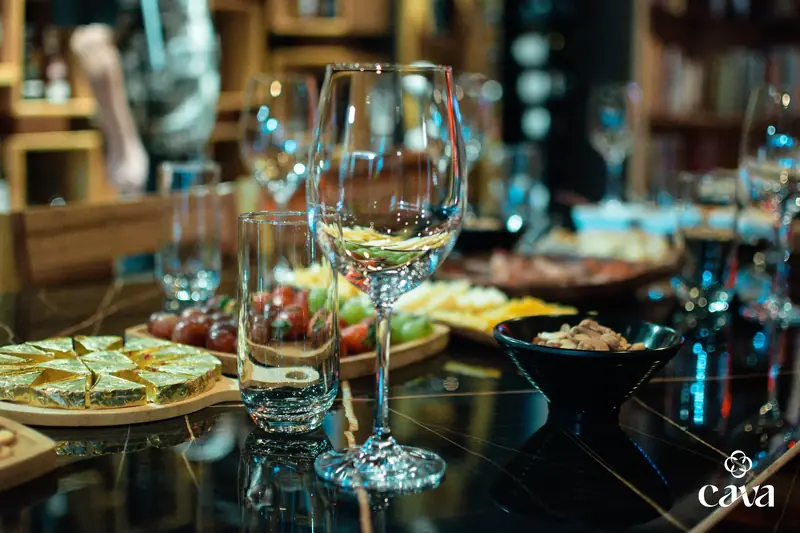

Eventos agendados de cata
Catas programadas con temática, selección de vinos y guía. Una experiencia educativa y sensorial en ambiente íntimo con capacidad limitada.
Ideal para: curiosos del vino, parejas, grupos de amigos
Ver próximas fechas